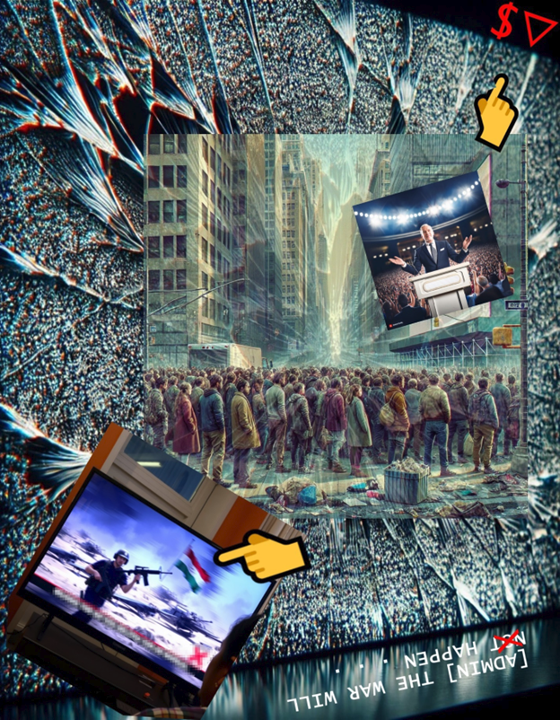

Zine Generation and Editing
The following is the entirety of my weekly discussion post.
I want to start off by saying I am not a visual artist and I hope to not be judged by my zine. Without further ado, here are my three pages:



Now, a description of what's going on here. In intro yesterday, we had a brief discussion about chapter ten of Debates in the Digital Humanities 2023, "Digital Humanities in the Deepfake Era." I pointed out the following quote toward the end of the chapter: "Deepfakes threaten everything from interpersonal relationships to international relations . . ." (171). When I first started my graduate education back at Marshall, I had a strong interest in international relations, war, the news media, and propaganda. This was my original educational intent. I'd already experimented with coding a Twitter bot that pulled articles from RSS feeds of randomized non-Western news sources as a small counter of alternative, localized perspective to what otherwise tends to dominate our social media feeds. I intended to teach criticality and news literacy through it. I didn't know where else to go in this specific project, but with that conversation from last night fresh in mind, this was what came of it. Both ChatGPT/DALL-E and Adobe Firefly were used, because each worked better for different tasks I was attempting (e.g., backgrounds versus subjects). As emojis are used so heavily in communication now, I viewed them as legitimate text to include.
The pages of the zine tell a story of how newer digital media, especially AI in all its various forms, will inevitably fulfill the same propagandic purposes as prior media to justify future conflicts. Each page features a reference to one of Jean Baudrillard's three essay collection, The Gulf War Did Not Take Place, through white text prefaced by an [ADMIN] user tag. [ADMIN] is meant to simultaneously be both a technical administrator and the political administration. The first page shows a disheveled and distracted crowd on a modern city street, staring up at a screen, which has a diagonally tilted (Dutch angled, to inspire anxiety; by the way, Google "Dutch angle" and look at your screen) presidential candidate at a podium. The crowd image is mildly transparent. Pointer fingers aim at a red dollar sign with a downward-pointing triangle, signaling economic difficulty, and also at the vaguely Iranian flag emblazoned on a television screen (manually blurred chyron due to gibberish, but I'd experimented with other obfuscations of this image to portray low information anyway). The background is an extremely cracked screen, with the center of the cracking (supposed impact point) lining up with the horizon of the city street trailing away from the crowd. The first essay of Baudrillard's collection is mirrored, as if a reflection from the broken screen, and the word "not" is covered with a red X.
The second page is of a cracked CRT television screen displaying either a heavily staticky test screen or some degree of magnetic disruption (like what degaussing used to remove). Two identical images on the left side appear, stacked so as to imply a poorly tracked film with two different frame halves appearing. They are of a woman viewing another television screen with soldiers in a war zone, although the screen is glitchy. American flags adorn the wall and coffee table. The second essay of Baudrillard's collection is split between the chyron of each screen (again with a red X over the word "not"), and the second image also features a green dollar sign and upward-pointing triangle over the hanging American flag, signaling economic improvement. To the right, between the two images, is a president being cheered on by a crowd waving American flags. Above and below are flipped yellow text referencing two incidents of past propaganda used in the media to justify conflict: the Gulf of Tonkin incident, which the NSA used to bring us deeper into the Vietnam War; and the Nayirah testimony, in which a diplomat's daughter was falsely portrayed by a public relations firm as a random child who witnessed wartime atrocities supposedly committed by Saddam Hussein's soldiers in the Gulf War, which did not happen but spurred congressional approval of our entry into the conflict.
Finally, the third page is of a heavily noised and pixelated Independence Day fireworks celebration (the only major manual modification I made). A third woman, this one much older, is viewing a screen with ostensibly American soldiers on it. The setting feeling more dystopic, with the glitchiness of the screen bleeding off and into the surrounding environment of the room. (This was totally accidental in the generative process but I really appreciated it.) No flags are seen in the room; they've moved into the screen with the soldiers. Two confetti popper emojis adorn both top corners. Lightly in the background of just this image section, you can see a non-noised and non-pixelated version of the background. The president from the last page is now standing victoriously above a crowd with a large American flag background. The third and final essay of Baudrillard's collection is now referenced at the top and bottom, with a green checkmark now adorning the word "not," suggesting a willingness to sign off on the history now that it can be contained/controlled as "the past."
Here, you will find not an application of the readings to process per se, but rather how I applied the readings to a more general sense of what inspired my zine. The very act of creating this zine can be viewed as an "act of resistance . . . within . . . the apparatus," given how Firefly especially was careful to avoid politically incendiary generations (Zylinska 33). At least, that's how I'm justifying the following soapbox.
Joanna Zylinska's discussion of Vilém Flusser's "apparatus" and how we can "reprogram [it]" is the first jumping-off point, specifically the following quote:"
". . . [it] means taking responsibility for our role in the co-creation of images, in full knowledge that we are neither sole authors nor sole recipients of the incessant media and image flow—although we may be the only ones for whom shaping this flow into a set of meanings becomes an ethicopolitical task, rather than just a preprogrammed function to be executed. The fact that the majority of people function as if that was not the case, running the programs of the apparatus in and with their lives, cameras, phones, and other media, only makes this task more urgent." (41–42)
I very much took to this logic. There is a history of the latest media being exploited by political actors for political gain, and indeed a present concern of this with our bleeding edge media as seen in Leah Feiger's podcast on Wired. Generative AI and its products inherit this baggage, operating as another apparatal extension of yet another apparatus.
Something I appreciate about Feiger's podcast is pointing out these historical ties, that people may not be fooled by generative AI as much as they're already prone to buy into certain beliefs, beliefs that "just make sense." In the brief discussion in intro yesterday, I pointed out how half of Gibson's suggestion of skepticism toward damning video evidence that is easily faked in the present world is just another way bad actors write off actual proof of their own misdeeds and discredit actual proof of others' successes and attractive qualities (171). Feiger's podcast also highlights that. It is the other half of Gibson's recommendation, a "digital literacy," that I think may still be useful: "We do not necessarily need to learn code, but we do need to understand how algorithms influence every part of our daily lives if we are going to successfully navigate the cacophony of disinformation" (171). Ideally, a literacy would teach a criticality (which does not exclusively have to be skeptical), leading to an interrogation of one's beliefs against the evidence rather than knee-jerk conclusions. All the same, I tend to view politics as not a battle of truth but of truths and emotions; a convenient explanation is all that's required for belief and argument.
"What is more, it has become increasingly impossible to distinguish between a representation and a model" (Zylinska 41). There is an obvious connection to Baudrillard's simulacra and hyperreality here, but to stay with Zylinska, what follows is most of use here: "We could go so far as to argue that now all images have become what filmmaker Harun Farocki has termed ‘operational images,' carrying the potential of an execution of a function" (Baudrillard, Simulation and Simulacra; Zylinska 41). This is the utility of the convenient explanation mentioned at the end of the last paragraph. The Gulf of Tonkin was not a justification, but an excuse, a stronger match for the already-lit primer. It was a justification insofar as it led us to the next step, in which it would no longer matter if its falsehood was exposed thanks to the next big convenient explanation. The international community is, after all, not beholden to the same burden of evidence admissibility, despite what it may profess. Actions taken are consequences past. And our inability to pause and/or question in the moment is a "running [with] the programs of the apparatus" leading to the next big war (42).
The US is for sure not the only or even most egregious offender at this time. I only take aim as an American citizen, thus the only government I have a realistic chance of altering the course of at this time. As an analogy, I lean on a quote from Zylinska again: "Any act of resistance can therefore only come from within and via the apparatus" (33). That doesn't mean one can't have opinions on other nations, take certain stances or actions, etc. I merely mean the strongest critique I felt I could make here was of that of my own citizenship. We all across the world hold a responsibility to do the same and see through to the shared humanity in the Other.
(Thank you for coming to my TED Talk, etc.)
Works Cited
Baudrillard, Jean. The Gulf War Did Not Take Place. Translated by Paul Patton, Indiana University Press, 1995.
Baudrillard, Jean. Simulacra and Simulation. Translated by Sheila Faria Glaser, University of Michigan Press, 1994.
Feiger, Leah. "Could AI and Deepfakes Sway the US Election?" Wired, 6 Sept. 2024, www.wired.com/story/deepfake-porn-election. Accessed 25 Sept. 2024.
Gibson, Abraham. "Digital Humanities in the Deepfake Era." Debates in the Digital Humanities 2023, edited by Matthew K. Gold and Lauren F. Klein, University of Minnesota Press, 2023, pp. 166–175.
Mitchell, Melanie. Artificial Intelligence: A Guide for Thinking Humans. Picador, 2019.
Zylinska, Joanna. The Perception Machine: Our Photographic Future between the Eye and AI. MIT Press, 2023.